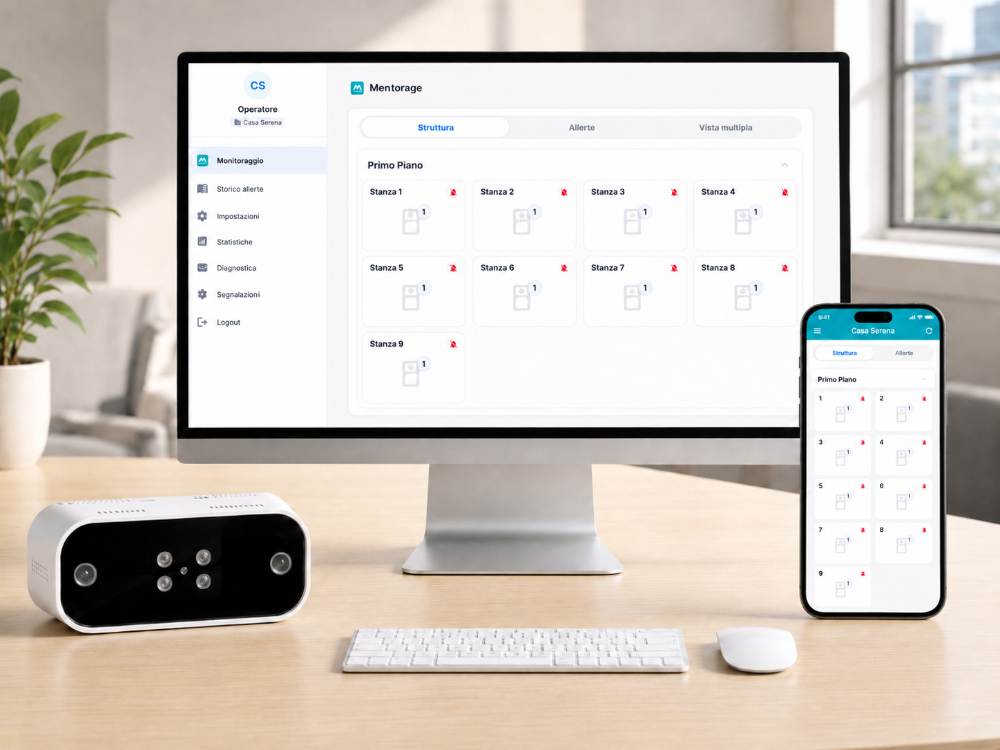
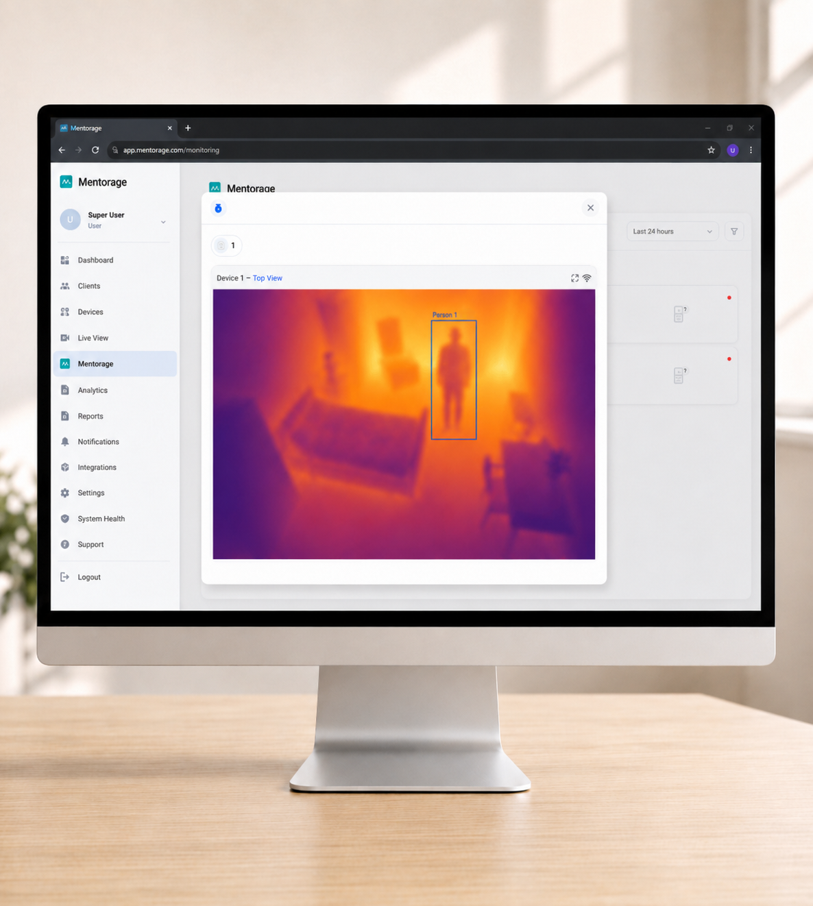
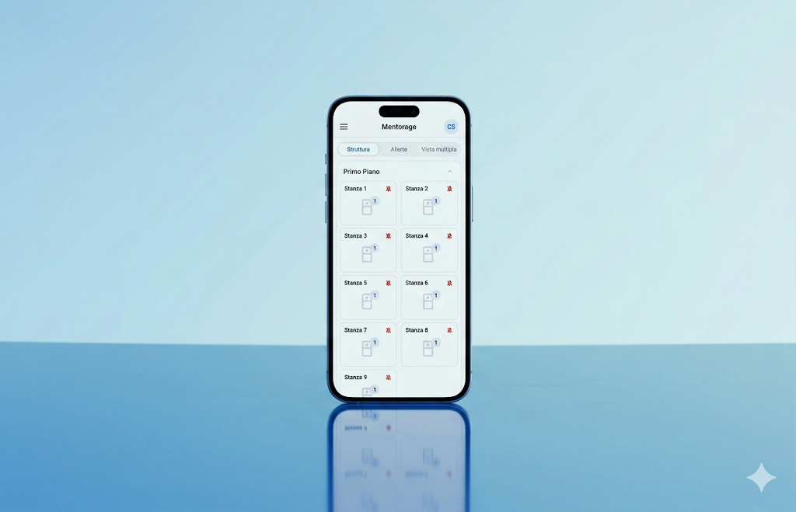

Dati e statistiche
Leggere come la realtà cambia nel tempo.
Pattern, frequenze e andamento operativo diventano più immediati da leggere, dal singolo paziente fino alla struttura.
Portale Mentorage
Mentorage organizza stanze, alert ed eventi in un’interfaccia semplice, pensata per aiutare il personale a capire rapidamente dove serve attenzione.

Overview
Mentorage concentra stanze, segnali e priorità operative in una lettura semplice, pensata per aiutare il personale a orientarsi in pochi secondi.
Dati ed eventi
Statistiche, alert e stato paziente vengono mostrati con tagli diversi ma dentro una composizione più sobria, così la pagina resta dinamica senza sembrare artificiosa.


Dati e statistiche
Pattern, frequenze e andamento operativo diventano più immediati da leggere, dal singolo paziente fino alla struttura.
Eventi
Alert e segnalazioni emergono in modo più coerente con il contesto assistenziale, aiutando a dare attenzione rapida a ciò che conta.
Stato paziente
Uno sguardo sintetico su sonno, veglia e presenza aiuta a limitare controlli superflui e a mantenere più fluidità nel turno.